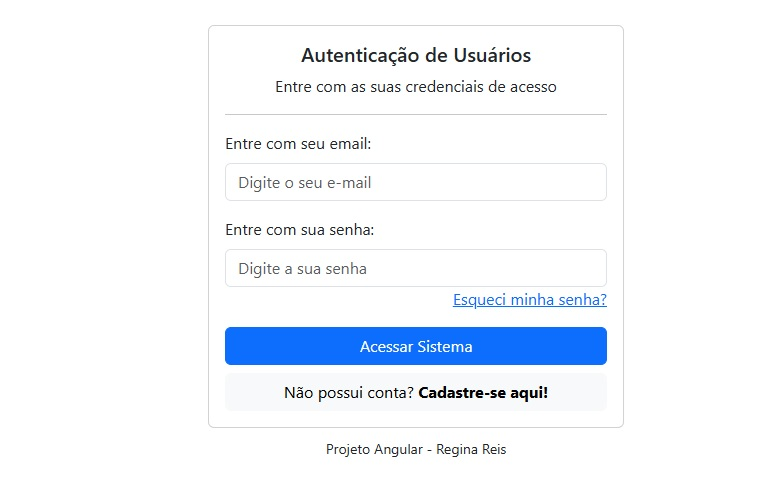
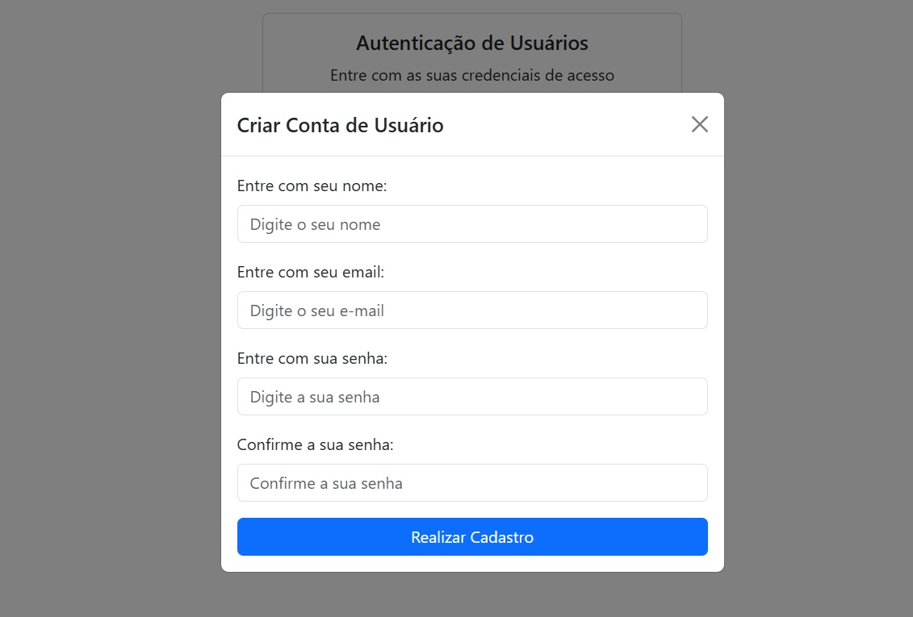
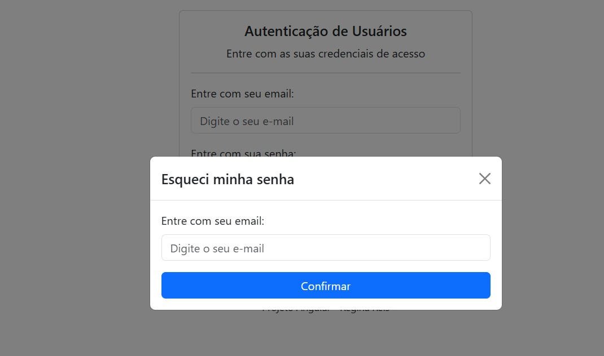
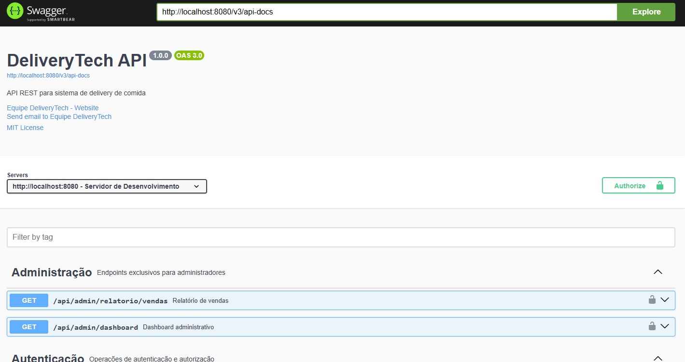
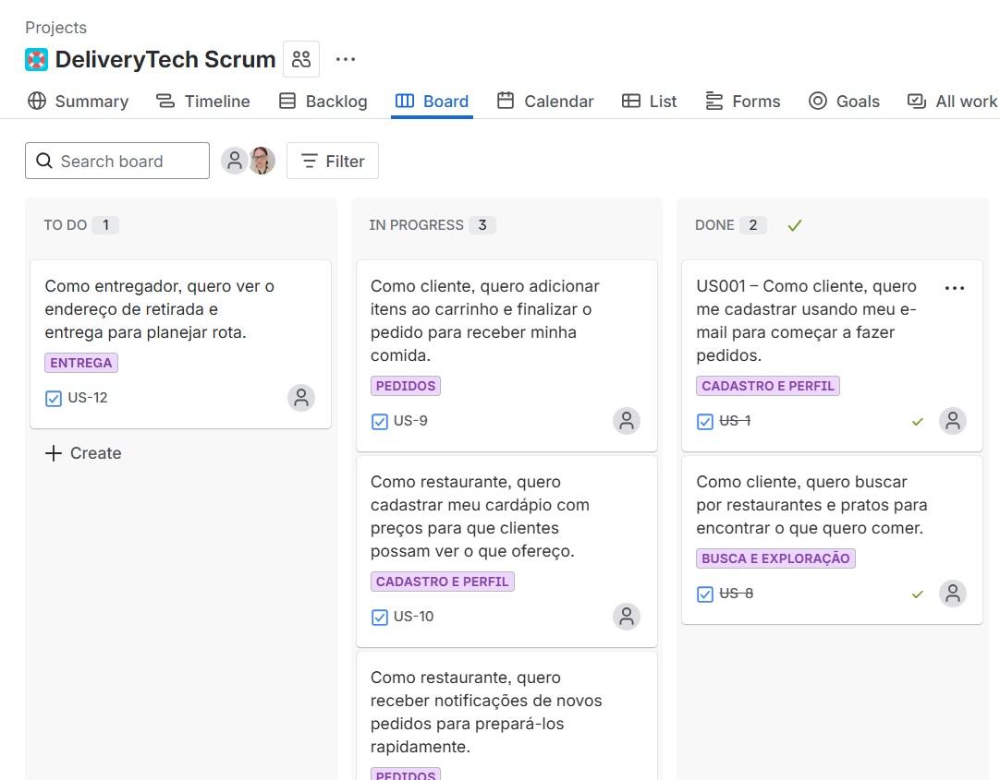

📲 Projeto Delivery Tech
API REST desenvolvida com Java Spring Boot para um sistema de entregas. O projeto inclui autenticação JWT, CRUD completo e testes de integração.
Tecnologias Utilizadas
- Java 17 + Spring Boot
- Banco de Dados PostgreSQL
- JWT para autenticação
- Swagger para documentação
Principais Funcionalidades
- Cadastro e gerenciamento de pedidos
- Autenticação segura com JWT
- API documentada com Swagger UI
Metodologia Utilizada
- Scrum como framework ágil
- Sprints de 2 semanas
- Daily meetings para acompanhamento
- Reuniões de planning, review e retrospectiva
- Kanban no Trello/Jira para organização das tarefas
Front-End



Back-End

Scrum
